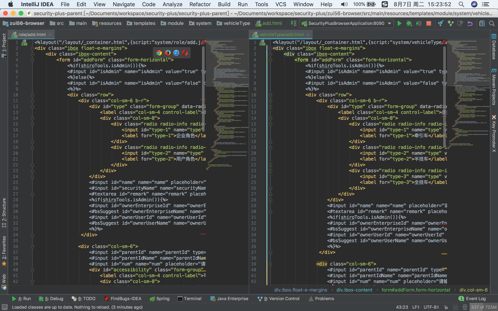
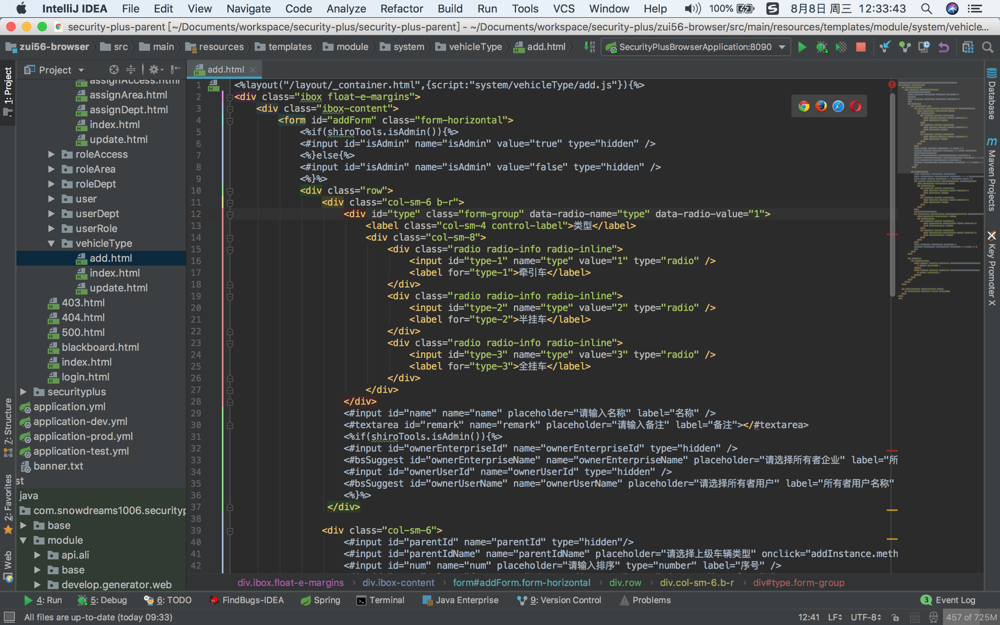
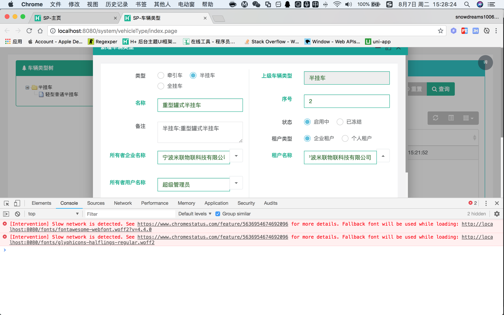

设计思想:
新增页面作为菜单页面功能的一部分,采用内页窗口模式弹出,但本质上是独立的页面,因此采用尽量简单方式开发新增页面;
找到 role 目录下面的 add.html ,和 vehicleType 目录下面的 add.html,打开左右两个窗口,同时对比查看; 
role
add.html
vehicleType
根据实际情况,编写 vehicleType 目录下面的 add.html ; 
还未修改 add.js ,因此 add.html 页面请求可能不正确显示,效果如图; 
add.js